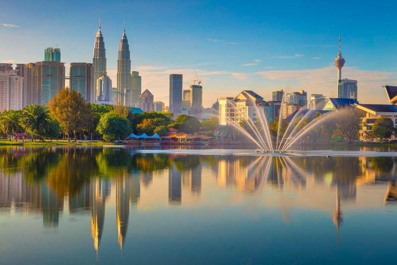

- 🏡Home🏡
- 👨🎓Schools👨🎓
- 💼Career💼
- 📈CV📉
- 🛩️Flying✈️
- ☎️Contact Me☎️
- 📜Various📜
Living In Malaysia⌛️
Life In Malaysia

Interesting Places & Relaxing Coastal Resorts
Malaysian Wildlife, Rain Forest & Plants
A Look At The Local Food
Commodity Prices
One of the great advantages of living in Malaysia,  • Fantastic Country!
• Malaysia sits approx 500Km north of the equator.
• Temperatures are around 30-36C degrees throughout the year.
• Previously, had the world's tallest buildings "Petronas Twin Towers".
• Petrol price 0.38 pence per litre.
• Cigarettes are £3.09 per pack of 20.
• Superb beaches. • A fusion of food. • Excellent scenery.
• Exotic wildlife. • Modern cities. • Cheap cost of living.
• Borders Thailand & Singapore. is that all commodity prices are controlled by the government. So for example, a loaf of bread in the south of the country, will cost exactly the same as in the north. Many a shopkeeper have been fined for trying to impose food price increases on the public.
Price controls are normally mandated by the government in the free market. They are usually implemented as a means of direct economic intervention to manage the affordability of certain goods and services, including rent, gasoline, and food.
Those found committing offences under the Price Control and Anti-Profiteering Act 2011 will be fined up to £92,553.00 for businesses and up to £18,874.00 for individuals or imprisonment of not more than three years or both.
Capital Punishment For Drugs
Capital punishment in Malaysia is a legal penalty in Malaysian law. Malaysia holds 33 capital crimes, including murder, drug trafficking, treason, acts of terrorism, waging war against the Yang di-Pertuan Agong (King) and since 2003, rape resulting in death or rape of a child.
This is one of the big reasons it is so safe in Malaysia.
Cameron Highlands
Cameron Highlands (Pehang) is a popular tourist destination. It is a township some 1500 meters on top of beautiful mountains. It's main attraction is it's tea plantations, & strawberry farms. It is a cool resort all year round, due to being so high above sea level.
It has a rainforest ecosystem, visited by researchers and naturalists across the world.
History
Cameron Highlands was discovered in 1885 by English surveyor William Cameron, under a commission by the colonial government. Forging a path through dense vegetation, he reached a magnificent and sublime plateau 'shut up in the mountains' along the vast Titiwangsa Range. Yet, the place lay unperturbed for 40 years, until British Administrator Sir George Maxwell developed it as a hill station.
General
There is a golf course, hotel & Cactus Valley is worth a visit. There is also "The Lake House", "The Butterfly Farm" & "The Time Tunnel Museum".
Langkawi Cable Car
Langkawi Cable Car also known as Langkawi SkyCab is a gondola lift and one of the major attractions in Langkawi Island, Kedah, Malaysia. It provides an aerial link from the Oriental Village at Teluk Burau to the peak of Gunung Machinchang, which is also the location of the Sky Bridge. The total length is 2.2 km (1.4 mi), with a journey time from the base to the top of around 15 minutes. It was officially opened in 2003.
History
The Langkawi cable car project was first mooted in 1999 by the then Prime Minister Mahathir Mohamad when he flew over Gunung Machinchang in a helicopter during his visit to Langkawi. The project was a joint venture by Doppelmayr of Austria and a local company.
After a survey of the mountain conducted in May 2000, the construction of Langkawi Cable Car began in April 2001. The gondola cable car system was selected as it permitted a long span of over 900 metres (3,000 ft). There are three stations for the cable car; the Top Station is located at the peak of Gunung Machinchang which is the second-highest peak of Langkawi. In the middle is an "angle station" where the gondolas make a 45-degree turn to reach the Top Station. As there is no road to the top due to the steepness of Gunung Machinchang, all the structural components needed to be lifted to top with helicopters in combination with an auxiliary working cable and then assembled on site.
General
There is a 2.5 km (1.6 mi) walking trail, the SkyTrail, through the forest from the top station that goes down to the middle station, and then the Seven Wells (Telaga Tujuh) waterfall, although walking unguided through the trail is not advisable as the trail is not well-maintained and there is a risk of getting lost. Pre-arrangement with a naturalist guide is necessary.
Menara Tower
Menara KL, is a communication tower located in Kuala Lumpur , Malaysia . Its construction was completed on March 1, 1995. It features an antenna that increases its height to 421 meters (1,381 ft) and is the seventh tallest single tower in the world . Its top lies at an elevation of 335 meters (1,099 feet). The rest of the lower part has stairs and an elevator to reach the upper area, where it has a revolving restaurant that provides a dining area with a view of the city of Kuala Lumpur.
History
The official laying of the first stone of the Kuala Lumpur Tower was overseen by the 4th Prime Minister of Malaysia , Mahathir bin Mohamad on October 1, 1991. The development of this tower is a three-phase process.
The first stage is the widening of Jalan Bukit Nanas and the excavation of land from the development location. This stage was completed on August 1, 1992.
On July 1, 1992, the second stage began with the construction of the foundation and basement of the tower. Around 50,000 cubic meters of concrete was poured continuously for 31 hours, breaking a record in the Malaysian construction industry. Foundation work that did not require piling was completed on April 1, 1993.
The third stage is the development of the 'superstructure' which began in May 1994. The development of the tower began with the establishment of the tower shaft, then the tower head. When the final touch on the top of the tower is applied, the construction of the tourist building begins.
The main lobby of the upper ground floor is decorated with a beautiful glazed dome that sparkles like a giant diamond. These domes were designed and arranged in the form of Muqarnas by Iranian craftsmen from Isfahan.
General
The design of the tower was designed by Kumpulan Senireka Sdn. Bhd. which is a local company. Its tapered and tall shape is its specialty. The construction material of this tower is concrete. This tower is the focus of tourists because it provides many recreational places. The design of this tower is influenced by Islamic , German , French and local architecture . The interior decoration is influenced by Islamic architecture characterized by the Muqarnas style from Esfahan , Iran. The art of interior design that is characterized by the touch of Muqarnas can be seen significantly, especially in the design of the glass dome found in the main elevator lobby. The glass dome that is available is in a rather rough texture, it has seven levels that symbolize the 7 layers (petals) of the sky according to Islam . This decoration can also be seen at the main entrance of the foyer and under the head of the tower..
Sunway Lagoon
Sunway Lagoon is an amusement park located in Bandar Sunway, Subang Jaya, Selangor, Malaysia owned by Sunway Group.
It was opened to the public in 1992, with two-park attractions, the Water Park and the Dry Park. In 2008, the Scream Park was added as the new park addition, in collaboration with the Lynton V Harris. There are 4 scare experiences, the theatre experience, Prison Break, the Rumah Hantu 3D and the Terror tunnel.
History
The park began operations in 1992 and was officiated by the then Prime Minister of Malaysia, Tun Mahathir bin Mohamad, on 29 April 1993. Since its opening, the theme park has added Malaysia’s first surf simulator, the Flow Rider in 2010 Malaysia’s first 5D Waterplexx in 2012 and a very large water ride, Vuvuzela, in 2013.
General
The 88-acre (36 ha) park is built 150 feet (46 m) below ground level on a tin mining wasteland and currently has 90 attractions spread across six parks. Sunway Lagoon has hosted some of the international lifestyle, music and sporting events including MTV World Stage (2009 to 2015) and Quiksilver Revolution Tour (2006 and 2008). Other concerts hosted are deadmau5 (2011). The Native Tour by OneRepublic, Pitbull (2011),and many more.
Aquaria KLCC
The Aquaria KLCC is an oceanarium located beneath Kuala Lumpur Convention Centre within Kuala Lumpur City Centre in Kuala Lumpur, Malaysia. Featuring 60,000 square feet (5,600 m2) in two levels with a 90-metre (300 ft) underwater tunnel, Aquaria KLCC houses over 250 different species and over 5,000 land and aquatic animals from Malaysia and around the world. Interactive information kiosks on fish and turtle conservation. It includes a themed retail area of about 5,000 square feet (460 m2). Aquaria KLCC is based on the journey of water from the land to the sea.
History
Construction for Aquaria KLCC started in 2003. It was officially opened in August 2005.
General
Featuring 60,000 square feet (5,600 m2) in two levels with a 90-metre (300 ft) underwater tunnel, Aquaria KLCC houses over 250 different species and over 5,000 land and aquatic animals from Malaysia and around the world. Interactive information kiosks on fish and turtle conservation. It includes a themed retail area of about 5,000 square feet (460 m2). Aquaria KLCC is based on the journey of water from the land to the sea. The journey starts in the misty highlands, down through rivers, through the rainforest and mangroves to the coral reefs into the deep blue sea. There is a large food-court just outside the aquarium with many choices of food. The Aquaria is located in the lower levels of the Kuala Lumpur Convention Centre. At the end of the Aquaria, visitors will pass by an exquisite souvenir shop and then you will also find a food court at the exit.
Melaka
Melaka, is a state located in the west of Peninsular Malaysia, opposite Sumatra. Covering an area of 1,650 square kilometers, it borders Negeri Sembilan in the north and Johor in the east. Pulau Besar(Besar Island) is also included in the state boundaries. Melaka is one of the developing states on the west coast where the percentage of Malays is one of the largest (67%) compared to other developing states on the west coast such as Johor , State of Sembilan , Selangor , Perak and Penang . The main cities in the state of Melaka are Melaka City , Alor Gajah , Masjid Tanah , Jasin , Merlimau , Tampin/Sebang Island , Ayer Keroh and Asahan .
History.
It was conquered by the Portuguese in 1511. Various ethnic customs and traditions are perfectly mixed in Melaka. The peaceful life of the people of Malacca stems from the lives of various races that have given birth to Malays, Chinese, Indians, Baba and Nyonya, Serani, and Chitty.
General.
According to the 2020 Malaysian Population and Housing Census , the total population of Melaka in 2020 is 998,428 people with a density of 583 people per square kilometer. A total of 92.9 percent of the total population are citizens. Almost 91% of the population lives in urban areas. The Central Melaka District has the largest population, which is 60 percent of the total population of Melaka.
Turtle Sanctuary
Turtle Islands Park (Taman Pulau Penyu) is located within the Turtle Islands, which lie in the Sulu Sea, some 3 kilometres (1.9 miles) north of Sandakan in Sabah, Malaysia. It consists of 3 islands - Selingaan, Little Bakkungan and Gulisaan (often spelt with -an instead of the traditional -aan), including the surrounding coral reefs and ocean. The Park is noted for its green turtles and hawksbill turtles which lay their eggs on the beaches of the islands. The Park covers an area of 17.4 km². The name Turtle Islands, however, refers to 10 islands, 3 of which are part of Turtle Islands Park of Malaysia, and 7 which belong to the Turtle Islands Wildlife Sanctuary of Tawi-Tawi province, Philippines..
History.
On 1 August 1966, the first turtle hatchery in Malaysia was established on Selingan funded entirely by the Sabah state government. Hatcheries (Video) on the remaining two islands followed shortly after. In 1972, Selingan, Bakkungan Kechil and Gulisan were designated as a Game and Bird Sanctuary. In 1977, this status was upgraded to that of a Marine Park. Permanent park staff monitor the turtles, protect the hatcheries and tag the turtles for research purposes. Libaran Island is also designated within the park boundaries, however it is not a major turtle hatching spot.
General.
Only on Selingan are there chalets for overnight visitors, and those who wish to see the turtles laying eggs must stay overnight. A curious fact of the three islands is that turtles come ashore nightly, not only during certain seasons and thus one is virtually guaranteed to see them. During the peak season (October) up to 50 turtles come ashore to lay eggs.
However, park rules and regulations are strictly enforced and visitors are not allowed on the beach from sunset to sunrise so as not to disturb the turtles. A ranger will call all visitors to observe only one turtle laying eggs per night. The eggs are collected and the visitors vacate the beach immediately so as not to scare away other turtles, which are very sensitive to movement on the beach.
After the laying and collection of eggs, and eventual tagging of the turtle if it is a first-time visitor, tourists are allowed into the hatchery to observe the further work of the rangers, the transplantation of the freshly laid eggs into a man-made incubation chamber. The chamber is no different from that of the turtle, between 60–75 cm deep, in the sand, but within a protected hatchery to make it impossible for natural predators to dig the nests open. Since temperature determines the sex of the turtles part of the hatchery is shaded, while the rest remains under the open sun.
After the transplantation of the eggs visitors will get turtle hatchlings(Video), to release into the sea, which is also done by night to further increase their chances of survival. Not all nests are emptied by the park rangers, but some remain undisturbed and develop naturally. By conserving the turtles the park does not want to endanger other wildlife on the island: many animals that are natural predators of the turtles such as monitor lizards, a crab specialising in turtle hatchlings, eagles and other birds, and marine animals such as sharks. They need the turtles for their survival. The turtle conservation programme in Sabah is the oldest in the world and with the most detailed statistics and research. Marine turtles have been around for 230 million years at least, but because of human activities they have been brought, over the past hundred years, to the brink of extinction.
KLCC Twin Towers
KLCC Twin Towers are a pair of 88-storey supertall skyscrapers in Kuala Lumpur, Malaysia, standing at 451.9 metres (1,483 feet). From 1998 to 2003, they were officially designated as the tallest buildings in the world until they were surpassed by the 2004 completion of the Taipei 101. The Petronas Towers are the world's tallest twin skyscrapers and remained the tallest buildings in Malaysia until 2019, when they were surpassed by The Exchange 106. The Petronas Towers are a major landmark of Kuala Lumpur, along with the nearby Kuala Lumpur Tower and Merdeka 118, and are visible in many places across the city.
History
The towers were designed by Argentine-American architect César Pelli. A distinctive postmodern style was chosen to create a 21st-century icon for Kuala Lumpur, Malaysia. Planning on the Petronas Towers started on 1 January 1992 and included rigorous tests and simulations of wind and structural loads on the design. Seven years of construction followed at the former site of the original Selangor Turf Club, beginning on 1 March 1993 with excavation, which involved moving 500 truckloads of earth every night to dig down 30 metres (98 ft) below the surface. The construction of the superstructure commenced on 1 April 1994. Interiors with furniture were completed on 1 January 1996, the spires of Tower 1 and Tower 2 were completed on 1 March 1996, 3 years after its construction was started, and the first batch of Petronas personnel moved into the building on 1 January 1997. The building was officially opened by the Prime Minister of Malaysia, Tun Dr. Mahathir bin Mohamad, on 31 August 1999.The twin towers were built on the site of Kuala Lumpur's race track. It was the tallest structure in Malaysia at the time of its completion. Test boreholes found that the original construction site effectively sat on the edge of a cliff. One half of the site was decayed limestone while the other half was soft rock. The entire site was moved 61 metres (200 ft) to allow the buildings to sit entirely on the soft rock. Because of the depth of the bedrock, the buildings were built on the world's deepest foundations. 104 concrete piles, ranging from 60 to 114 metres (197 to 374 ft) deep, were bored into the ground. The concrete raft foundation, comprising 13,200 cubic metres (470,000 cu ft) of concrete was continuously poured through a period of 54 hours for each tower. The raft is 4.6 metres (15 ft) thick, weighs 32,500 tonnes (35,800 tons) and held the world record for the largest concrete pour until 2007. The foundations were completed within 12 months by Bachy Soletanche and required massive amounts of concrete, was discovered in 1885 by English surveyor William Cameron, under a commission by the colonial government. Forging a path through dense vegetation, he reached a magnificent and sublime plateau 'shut up in the mountains' along the vast Titiwangsa Range. Yet, the place lay unperturbed for 40 years, until British Administrator Sir George Maxwell developed it as a hill station.
General
The towers feature a double decker skybridge connecting the two towers on the 41st and 42nd floors, which is the highest 2-story bridge in the world. It is not attached to the main structure, but is instead designed to slide in and out of the towers to prevent it from breaking, as the towers sway several feet[specify] in towards and away from each other during high winds. It also provides some structural support to the towers in these occasions. The bridge is 170 m (558 ft) above the ground and 58.4 m (192 ft) long, weighing 750 tons. The same floor is also known as the podium, since visitors going to higher levels have to change elevators here. Dynamic analyses were performed and iterated to support the final design by studying the structural behavior of the twin towers to time-varying loads such as earthquakes and wind. The skybridge is open to all visitors, but tickets are limited to about 1,000 people per day, with around half available to be purchased online, and the other half obtained on a first-come, first-served basis. Initially, the visit was free but in 2010, the tickets started being sold by Petronas. Visitors can choose to opt for package one which is just a visit to the skybridge or go for package two to go to the skybridge and all the way to level 86. Visitors are only allowed on the 41st floor as the 42nd floor can only be used by the tenants of the building.
China Town
Petaling Street is a Chinatown located in Kuala Lumpur, Malaysia. The whole vicinity is also known as Chinatown KL. Haggling is a common sight here and the place is usually crowded with locals as well as tourists. The area has dozens of restaurants and food stalls, serving local favourites such as Hokkien mee, Ikan Bakar (barbecued fish), asam laksa and curry noodles. Reggae Bar Chinatown is located here. Traders here are mainly Chinese but there are also Indian, Malay, and Bangladeshi traders. It is also known for street prostitution.
History
The original Chinatown is centred on Market Square, Jalan Tun H.S. Lee (or High Street). The High Street was popular as it was higher than the rest of the town and thus less prone to floods. This led the wealthier population to build their shophouses here. As a result, the more ornate shophouses were built north of Jalan Cheng Lock and closer to the High Street business centre. Kuala Lumpur was a typical "pioneer" town around the start of the 20th century. The population was predominantly male, and they were typical of the rough and tough pioneers of those times. The men were mainly Cantonese and Hakkas who had come to the city because of the tin trade, working as coolies in the mines. They were governed by a Chinese Kapitan or headman. The most famous Chinese Kapitan was Yap Ah Loy, a Hakka. In the 1860s to 1870s, the Selangor Civil War erupted between rival Malay factions as well as within the Chinese community that were allied to them. The Chinese community split along partisan lines between the Hokkien Ghee Hin and the Hakka Hai San secret societies. When the British authorities realised that the war disrupted their economy and supply chains, they decided to enter the war. As a result, many buildings were destroyed or severely damaged. During the civil war, the tin mines were abandoned. The neglect during this time caused them to become flooded. After the war, (and when the miners returned) they found that the mines were now unworkable due to flooding. Yap Ah Loy persuaded the miners and coolies to remain in KL and persuaded the Malays in the surrounding districts to grow rice and other garden products. He opened a Tapioca Mill in Petaling Street where the tubers from his farms were brought to be ground into flour. Petaling Street is fondly called 'Chee Cheong Kai' in Cantonese which means Starch Factory Street.
General
There used to be a McDonald's on the 1st shop lot of Petaling Street (facing Foch Avenue (Jalan Tun Tan Cheng Lock)) before it ceased operations several years ago. Nearby is a Chinese bookstore, as well as food stalls selling a variety of local food like Hainanese chicken rice and noodles. One famous and established Wanton Noodle shop called Koon Kee Too is located near the intersection inside Petaling Street. Also nearby are the Jamek Mosque, an old mosque of Moorish architecture, as well as the Central Market, all accessible within walking distance.[original research?] One of Kuala Lumpur's famous landmarks, the Sri Mahamariamman Temple, Kuala Lumpur, is located along with Jalan Tun H.S. Lee. It is one of KL's oldest and richest Hindu temples, receiving many devotees and tourists daily. Another notable landmark within the area is Kwai Chai Hong (Chinese: 鬼仔巷) located along Lorong Panggung. It is a back alley behind the shophouses with lots of mural arts managed by Bai Chuan Management Sdn Bhd to make use as a tourist attraction. The name translates literally as Little Ghost Lane or Little Demon Lane in English. The alley features 6 artistic interactive murals with QR codes placed on the walls of each mural about historic life of residents around the block back in the days.
Shangri-La's Orangutan Project
Orangutans are great apes native to the rainforests of Malaysia and Indonesia. They are now found only in parts of Borneo and Sumatra, but during the Pleistocene they ranged throughout Southeast Asia and South China. The most arboreal of the great apes, orangutans spend most of their time in trees. They have proportionally long arms and short legs, and have reddish-brown hair covering their bodies. Adult males weigh about 75 kg (165 lb), while females reach about 37 kg (82 lb). Dominant adult males develop distinctive cheek pads or flanges and make long calls that attract females and intimidate rivals; younger subordinate males do not and more resemble adult females. Orangutans(Video) are the most solitary of the great apes: social bonds occur primarily between mothers and their dependent offspring. Fruit is the most important component of an orangutan's diet; but they will also eat vegetation, bark, honey, insects and bird eggs. They can live over 30 years, both in the wild and in captivity, & are among the most intelligent primates. They use a variety of sophisticated tools and construct elaborate sleeping nests each night from branches and foliage. The apes' learning abilities have been studied extensively. There may be distinctive cultures within populations. Orangutans have been featured in literature and art since at least the 18th century, particularly in works that comment on human society. Field studies of the apes were pioneered by primatologist Birutė Galdikas and they have been kept in captive facilities around the world since at least the early 19th century. All three orangutan species are considered critically endangered. Human activities have caused severe declines in populations and ranges. Threats to wild orangutan populations include poaching (for bushmeat and retaliation for consuming crops), habitat destruction and deforestation (for palm oil cultivation and logging), and the illegal pet trade. Several conservation and rehabilitation organisations are dedicated to the survival of orangutans in the wild.
History.
The three orangutan species are the only extant members of the subfamily Ponginae. This subfamily also includes extinct apes such as Lufengpithecus, which occurred 8–2 mya in southern China and Thailand. Indopithecus, which lived in India from 9.2 to 8.6 mya; and Sivapithecus, which lived in India and Pakistan from 12.5 mya until 8.5 mya. These animals likely lived in drier and cooler environments than orangutans do today. Khoratpithecus piriyai, which lived 5–7 mya in Thailand, is believed to be the closest known relative of the living orangutans and inhabited similar environments. The largest known primate, Gigantopithecus, was also a member of Ponginae and lived in China, from 2 mya to 300,000 years ago.
General.
Orangutans display significant sexual dimorphism; females typically stand 115 cm (3 ft 9 in) tall and weigh around 37 kg (82 lb), while adult males stand 137 cm (4 ft 6 in) tall and weigh 75 kg (165 lb). Compared to humans, they have proportionally long arms, a male orangutan having an arm span of about 2 m (6.6 ft), and short legs. They are covered in long reddish hair that starts out bright orange and darkens to maroon or chocolate with age, while the skin is grey-black. Though largely hairless, males' faces can develop some hair, giving them a beard. Orangutans have small ears and noses; the ears are unlobed. The mean endocranial volume is 397 cm3. The cranium is elevated relative to the face, which is incurved and prognathous. Compared to chimpanzees and gorillas, the brow ridge of an orangutan is underdeveloped. Females and juveniles have relatively circular skulls and thin faces while mature males have a prominent sagittal crest, large cheek pads or flanges, extensive throat pouches and long canines. The cheek pads are made mostly of fatty tissue and are supported by the musculature of the face. The throat pouches act as resonance chambers for making long calls. An orangutan skeleton Skeleton of subadult Bornean orangutan Orangutan hands have four long fingers but a dramatically shorter opposable thumb for a strong grip on branches as they travel high in the trees. The resting configuration of the fingers is curved, creating a suspensory hook grip. With the thumb out of the way, the fingers (and hands) can grip securely around objects with a small diameter by resting the tops of the fingers against the inside of the palm, thus creating a double-locked grip. Their feet have four long toes and an opposable big toe, giving them hand-like dexterity. The hip joints also allow for their legs to rotate similarly to their arms and shoulders. Orangutans move through the trees by both vertical climbing and suspension. Compared to other great apes, they infrequently descend to the ground where they are more cumbersome. Unlike gorillas and chimpanzees, orangutans are not true knuckle-walkers, instead bending their digits and walking on the sides of their hands and feet. Compared to their relatives in Borneo, Sumatran orangutans are more slender with paler and longer hair and a longer face. Tapanuli orangutans resemble Sumatran orangutans more than Bornean orangutans in body build and hair colour. They have shaggier hair, smaller skulls, and flatter faces than the other two species.
Perdana Botanical Gardens Project
Perdana Botanical Gardens, formerly Perdana Lake Gardens, Lake Gardens and Public Gardens, is Kuala Lumpur's first large-scale recreational park. Measuring 91.6 hectares (226 acres), it is located in the heart of the city and established in 1888. The park served as place of refuge from the hustle and bustle of the city during colonial times. It contains large sculpted and manicured gardens and a host of attractions.
History.
The colonial-era park was the brainchild of Alfred Venning, the British State Treasurer of Selangor in the late 19th century. In 1888, Venning proposed that a botanical garden be built in the valley of Sungei Bras Bras, and the British Resident Frank Swettenham agreed to the scheme and authorised a small grant from the State funds for the garden. Venning laid out the plan for a park of 173 acres (700,000 m2) which included an "experimental economic garden" and a lake. Venning cleared the area of scrubs and lalang, and planted ornamental flowering trees and shrubs in the garden. The scheme attracted public support, and a leading figure of the Cantonese community, Towkay Chow Ah Yeok, contributed a hundred chempaka and orange trees to the initial planting programme in 1888. An ornamental lake was created by damming up Sungei Bras Bras, which was then named Sydney Lake after Swettenham's wife (the lake is now known as Perdana Lake). The project took nearly ten years to complete, but the garden was formally opened on 13 May 1889, just a year after work began, by the Governor of the Straits Settlements, Sir Cecil Clementi Smith. A fountain in Lake Gardens(Video), Kuala Lumpur Canopy at the Main Square (Laman Perdana) of the garden. KL Sentral Station as seen from Perdana Botanical Gardens on a clear sunny evening. The official residence of the then British government representative Frank Swettenham, now known as Carcosa Seri Negara, was located atop a hill here. Venning also created a social club by the lake, the Lake Club (now known as the Royal Lake Club), in 1890. The club, unlike the Selangor Club, was an exclusively European club, and it would dominate the social scene for Europeans in Kuala Lumpur for over half a century. In 1963, the Malaysian Houses of Parliament was built on the northern fringes of the park.
General.
The park was initially called Public Gardens but later renamed Lake Gardens. In 1975, it was renamed Taman Tasik Perdana, or the Perdana Lake Gardens, by Tun Abdul Razak. On 28 June 2011, the gardens were renamed again to Perdana Botanical Gardens by Dato' Sri Najib Razak in the first phase of turning the park into a botanical garden.
The garden is located along Jalan Perdana or Venning Road. It is located near the National Museum of Malaysia. The nearest public transportation hub within walking distance is Muzium Negara MRT station. Places of interest among the tourist attractions located here are deer park, Hibiscus garden, Orchid Garden, Kuala Lumpur Bird Park and Kuala Lumpur Butterfly Park. The Bird Park with a land area of over 20.9-acre (8.5 ha) was opened on 15 November 1991, features more than 3,000 birds from more than 200 species of bird and is billed as the world's largest covered bird park. The butterfly park was opened in 1992, spans over 80,000 sq ft (7,400 m2) of landscaped garden with over 5,000 butterflies, exotic plants, butterfly-host plants and ferns and is one of the largest houses in the world.